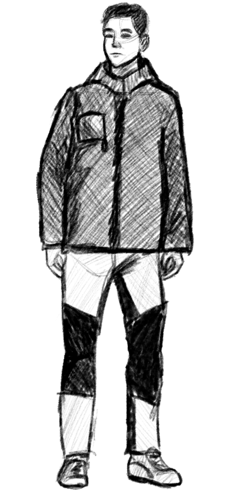
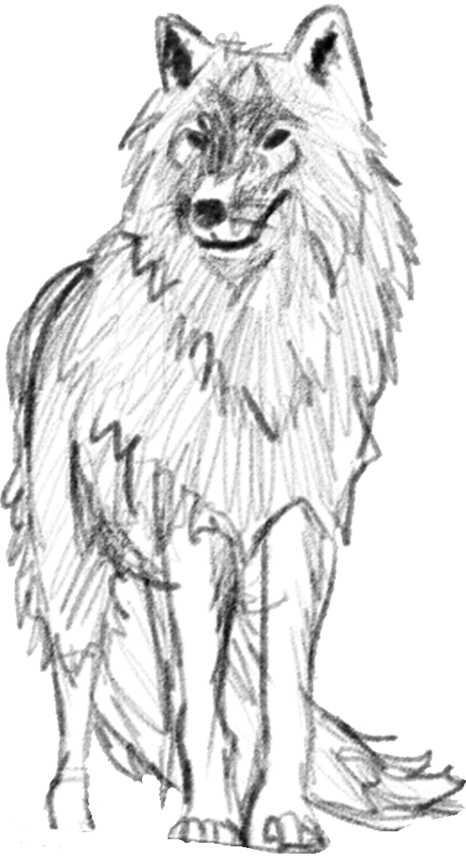

"What would you do if you ended up in an unknown place and your only option to survive was to flee?"
"Walkros" is a 3D, third-person horror video game in which you look for your parents on an island full of creatures that try to attack you without being able to defend yourself in any way.